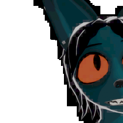

JUNIE'S REF
this is where you can find info about my fursona, junie. or juniper. her name is juniper but she goes by junie. whatevs,,,,
i unfortunately dont feel like making a thumbnail. click below for the main ref image. it's a little big, so bewarb.
CLICK THE LINKS BELOW TO SEE BOTH TYPES OF MY REFERENCE
[CLOTHED REF] [UNCLOTHED REF (THERES NO GENITALS JUST BUTT)]DIGITAL COMPRESSION
if not obvious from the website, there's nothing i love more than the internet and compression. in all of the art i make with junie, i specifically made her have visible compression artifacting (or simulated compression artifacting). if you draw her, please know this effect isn't required, and it's just a fun thing i do with her in specific.
WEIRD-ASS OUTLINE
junie has this outline i made, which is a little weird. it's a weird-ass outline.

this outline was mainly achieved by first making a black and white mask of junie's outline. i used the "dilate/erode" node in blender's compositor, which proportionally grows the mask. now, we pixelize this. i usually use non-square pixels, and some tiny square pixels. i do three, random numbers, but most of the time they come out to 2x5, 3x3, and 7x14 for some mega chunks. now we stack all these together, and you get the signature junie outline. this probably has a name i don't know.
COLOR COMPRESSION
i used posterize. all you have to do is crank it to a high number (or whatever means keep a lot of different colors in your software). all this does is reduce the max amount of colors that can appear. the goal is to make it look kinda normal but still have visible issues with gradients. this takes care of like 70% of the compression. i occasionally add some noise or film grain to the image before posterizing to help make it look more compressed.
PIXELIZATION
so one important thing you can do is to add multiple pixelized layers. you can repeat the same concept that i used in the outline, but usually with more extreme numbers. essentially, you pixelize the image, make that layer like 10-30% opacity,
JUNIE IS JUNO BUT JUNO IS NOT JUNIE
i am junie. but i am also junie. but junie is not me. i realize now that this is confusing, but i just wanted some seperation between me and the fox version of me. this does mean i can project myself onto her while still making her different. of course, i like exageratting some of my flaws onto her. for example, i tried to make her as flat as board. i intended for her to look like she was pre-hrt in her transition, and also perpetually boymoding. she's too scared to commit to her transition, even if she knows she would be so much happier if she got the help she wanted. i also just made her fucking ugly. at least i tried. however, when you draw a blue fox, there's no way to avoid them looking slightly good.